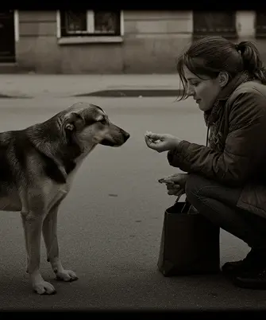
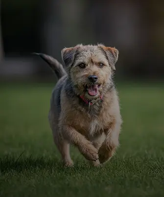
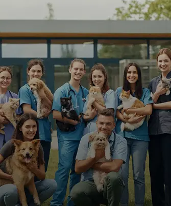
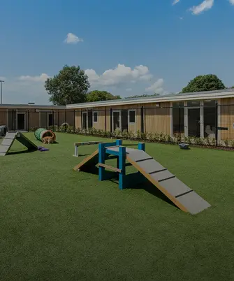
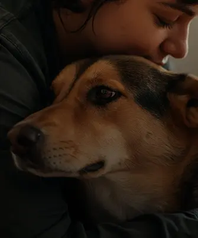

Все почалося у 2015 році з кількох небайдужих людей та одного врятованого собаки. Сьогодні ми — один з найбільших притулків у регіоні, але наша мета незмінна: дати другий шанс тим, кого зрадили.

Ми рятуємо, реабілітуємо та знаходимо люблячі родини для безпритульних тварин. Наша мета — не просто дати прихисток, а й забезпечити кожному "хвостику" щасливе та повноцінне життя в новій родині.

"Хатинка Лапок" — це команда професійних ветеринарів, кінологів та десятків волонтерів, які щодня вкладають свою душу та час у турботу про наших підопічних. Ми працюємо 24/7, бо їхнє життя залежить від нас.

Ми створили безпечний та комфортний простір. Кожна тварина отримує якісне харчування, своєчасну ветеринарну допомогу, проходить соціалізацію та гуляє на спеціально обладнаних майданчиках.

Ваша допомога — безцінна. Ви можете взяти тваринку додому, стати волонтером, допомогти фінансово або інформаційно. Кожен маленький внесок наближає нас до великої мети — світу без безпритульних тварин.